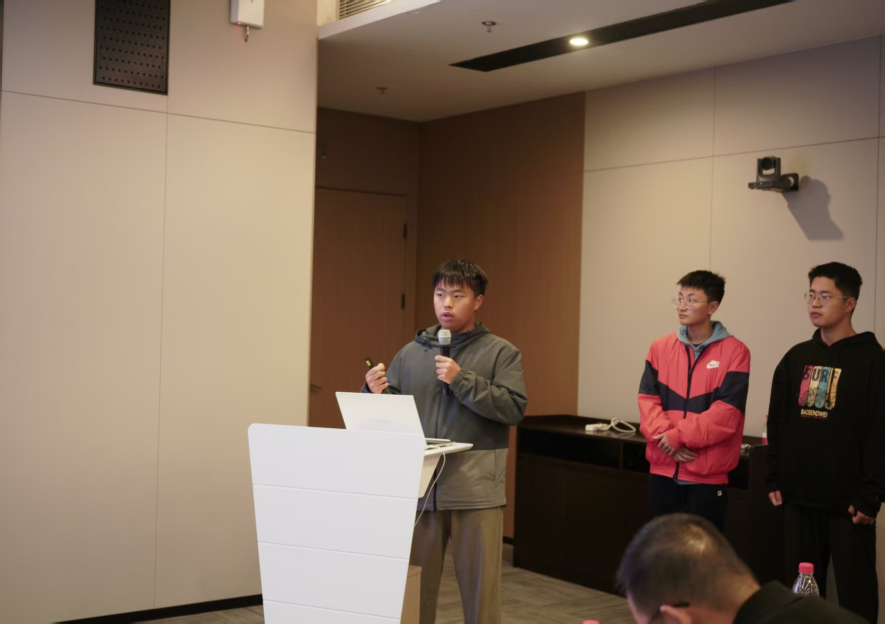
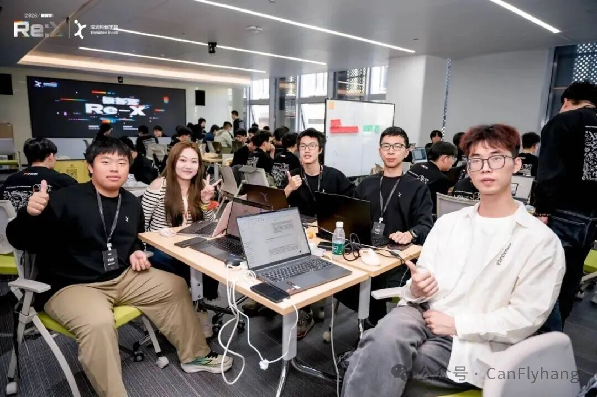
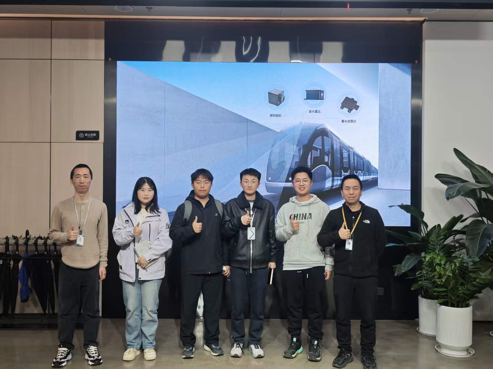
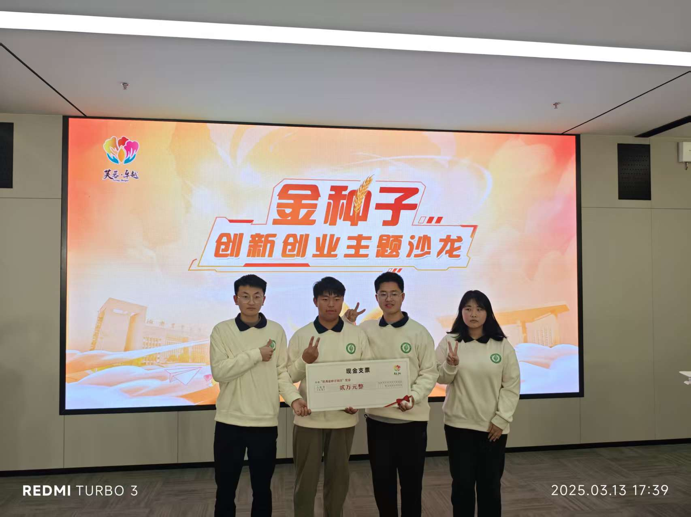
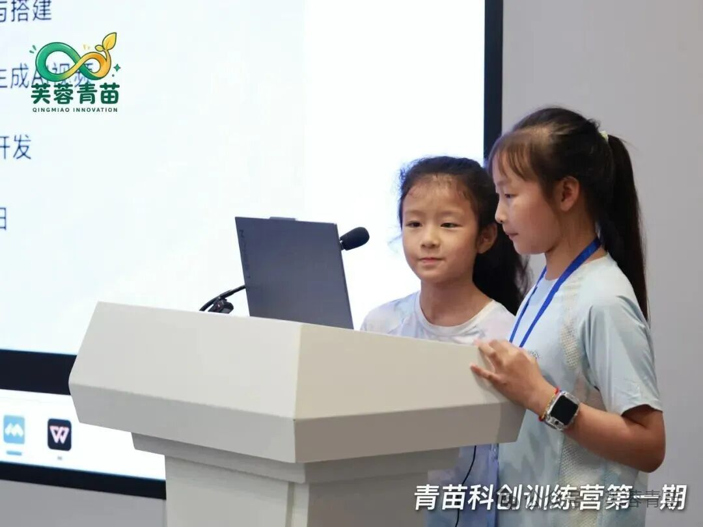

科创教育策划
把真实的工程与创新问题，转化为青少年可参与、可完成的学习场景。
我是徐智航，本科就读于湘江卓越工程师学院湖南农业大学分院，欧洲开放大学 MBA，师从李泽湘教授，深圳科创学院 26 年极客营学员。深耕科创人才培育领域，目前负责科创项目运营，主要策划青少年科创训练营、黑客松等科创赛事活动，专注搭建高校科创社群，挖掘与扶持青年创新团队，同时持续探索硬件嵌入式开发与 AI 模型部署相关方向，热衷于连接高校学生、科创创业者与产业资源，助力青年创新想法落地。




以需求挖掘为源头，把策划落到场景
把真实的工程与创新问题，转化为青少年可参与、可完成的学习场景。
负责科创项目全周期运营，搭建高校科创社群，持续挖掘与扶持青年团队。
保持一线技术手感，让策划判断扎根于真实的技术可行性之上。
连接高校学生、科创创业者与产业资本，为青年想法对接落地的资源通路。
在真实业务中沉淀产品与运营能力
人才猎聘专员 · Talent Scout
面向全国高校开展创业人才寻访与人才 Mapping，精准识别具备创业意愿与创新潜质的在校大学生；以学院寒暑假科创营、极客营为人才入口，完成候选人的引流、筛选与转化，输送至项目孵化体系。
校园伙伴
负责校园活动策划与产品推广，将品牌活动深度落地高校场景，搭建并运营高活跃度的学生社群。
产品运营实习生
负责公司产品海内外生态社群的运营，系统性收集用户反馈并转化为产品迭代输入，深度参与产品早期研发。
售前产品实习生
负责公司旗下云计算、基础架构的售前支持、运营推广与解决方案提供，将技术能力转化为客户可理解的业务方案。
以 Leader 身份筹划的品牌活动
 第一期 · 大学生黑客松
第一期 · 大学生黑客松
 第二期 · 大学生黑客松
第二期 · 大学生黑客松

第一期 · 青少年科创训练营产品观与人才观的深度思考
我始终相信，最好的产品不是功能的堆砌，而是痛点的精准击穿。
需求的本质是场景，而场景的核心是人。在每一次产品策划中，我习惯性地追问三个问题：谁在用？在什么情境下用？用完后的真实感受是什么？
场景 > 功能，体验 > 噱头。这是我做产品决策的第一性原理——不以「酷不酷」衡量价值，而以「有没有真正解决问题」判断取舍。
尤其在硬件与 AI 结合的领域，我更关注「人机协作的真实边界」：技术能做什么、用户真正需要什么、两者之间的交集在哪里。只有交集处的需求，才值得倾注资源去打磨。
参与深圳科创学院的人才猎聘工作让我深刻认识到：创新不是天赋的特权，而是一套可以被系统培育的能力结构。
过去我们习惯用「已有成果」来衡量一个人是否值得培养，但这往往是后验的、静态的视角。我更关注的是这个人是否具备持续成长的结构性特征：
· 好奇心 — 对未知领域有天然的探索欲，遇到新问题会兴奋而非逃避
· 行动力 — 想到就做，做了再迭代，不停留在空想阶段
· 韧性 — 失败后能快速复盘、调整路径，继续前行而非一蹶不振
这三维能力不是固定的标签，而是动态的、可观测的行为模式。我所做的，就是搭建一个让年轻人被看见、被激发、被赋能的科创生态，让更多具备这些特质的人有机会进入项目孵化体系，把创新想法真正落地。
社交媒体
扫码关注 · 欢迎连接